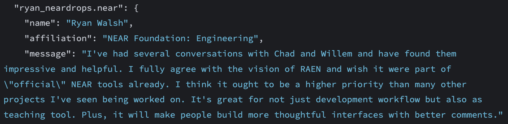
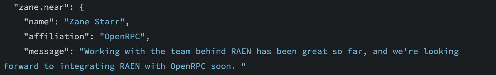

class: center <img alt="" src="img/aha-labs.png" style="width: 250px" /> <h1 style="margin-top: 0">Aha Labs</h1> --- ## The Team * **Willem Wyndham** (Rust, WebAssembly, NFTs), **Chad Ostrowski** (JavaScript, subgraphs, education, NFTs), **Jonathon Hammond** (Rust, NFTs), **Andrew Nickell** (Design), **Jenni Dinsmore** (Project Management), **Anil Kumar** (Rust, JavaScript) * Well-loved conference speakers * A collective 8 years experience working in NEAR ecosystem * Creators/maintainers of **TENK** & **Fayyr** NFT launchpads; **near-sdk-as** contract-authoring framework; **near-units** unit conversion library; **near-simulator** & **near-workspaces-js** testing tools --- ## The Problem * Growing a codebase from **hackathon proof-of-concept** to **full-scale, complex dapp** is hard. * Most complex dapps require: 1. secure smart contracts (of their own, and/or pre-existing), 2. off-chain indexing, such as with Subgraphs, 3. robust frontends, 4. off-chain storage. * No current documentation or tooling covers all of this. **There's no one tool to help builders create complex dapps**, with all parts included. * **No blockchain gets this right.** When we say "no current documentation or tooling", we really mean none. --- ## The Solution RAEN is... - the Ruby on Rails of the Open Web: a framework for quickly shipping ambitious dapps - apps & infrastructure to find & use pre-existing smart contracts - no-code smart contract launcher - low-code smart contract authoring tool (OpenZeppelin, but better) --- ## The Market * **Now: all web3 builders** * Later: web2 builders migrating to web3 --- ## Landscape / Competitors - **NEAR**: docs.near.org, near-sdk.io, near-examples, learn-near, Figment Learn, Pagoda's Dev Console, OpenRPC - **Ethereum**: OpenZeppelin, Truffle Suite, Hardhat, Ape, Brownie, Web3j, Create Eth App, Scaffold-Eth, Alchemy, Foundry - **Solana**: Solana Cookbook, Solana for Beginners Blog Post, soldev - **Cosmos**: Ignite, cosmos-sdk - **Cardano**: Plutus --- # Progress - Initial [RAEN](https://github.com/raendev/raen), [RAEN Admin](https://raen.dev/admin), and [RAEN Guide](https://raen.dev/guide) launched in [June 2022](https://twitter.com/raendev/status/1541383341160615936) - Early users [love](https://raen.dev/admin/#/rec.raendev.near/GetRecommendations) it [](https://raen.dev/admin/#/rec.raendev.near/GetRecommendations) - Ecosystem partners [excited](https://raen.dev/admin/#/rec.raendev.near/GetRecommendations) to integrate [](https://raen.dev/admin/#/rec.raendev.near/GetRecommendations) --- # What We're Looking For - $400k - 6 month runway to: - build out base offering - beta & user test to validate approach - hire strategy, product, marketing teams - launch complementary products & services, including possible premium courses & upgrades - Plan to apply for further funding in 4-6 months to continue work and accelerate marketing